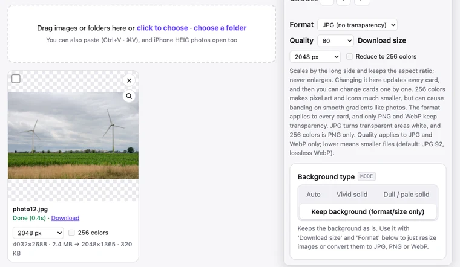

Reduce Image File Size Without Visible Quality Loss
An email attachment limit, an upload form that demands “under 1MB”, a blog whose photos load slowly: sooner or later you need smaller images. There are three main ways to shrink them, and they differ a lot in effect. Here are measurements on a real photo, and how to shrink many images at once with BGPeel.
Three ways to shrink an image
- Reduce dimensions: fewer pixels across and down. Halving the width and height leaves a quarter of the pixels, the most reliable reduction there is. Phone photos are usually around 4000px wide, but 2048px is plenty for anything viewed on a screen.
- Lower the quality: JPG and WebP discard detail the eye is less likely to notice, and the lower the quality value, the more they discard. Down to about 80, differences are hard to spot.
- Change the format: photos belong in JPG or WebP; as PNG they get very large. Screenshots, drawings and icons, on the other hand, shrink well as PNG reduced to 256 colors.
Measured results
We saved a photo released by Aaron Rust under CC0 (public domain) as a 4032×2688 JPG at quality 90 (2.4MB), similar to a phone photo, then downloaded it from BGPeel with different settings. Measured in Chrome 155 on an Apple M1 MacBook; each download took about 0.2 seconds.
| Download settings | Size | vs original |
|---|---|---|
| Original (JPG, 4032×2688) | 2.4MB | – |
| JPG, default quality (92), same size | 1.9MB | −20% |
| JPG, quality 80, same size | 1.1MB | −53% |
| JPG, quality 60, same size | 749KB | −69% |
| WebP, quality 80, same size | 808KB | −67% |
| JPG, quality 80, 2048px | 320KB | −87% |
| WebP, quality 80, 2048px | 237KB | −90% |
| JPG, quality 80, 1024px | 95KB | −96% |
As the table shows, scaling to 2048px did more than dropping quality all the way to 60. Even re-saving at the same size with quality 92 saved 20%, because programs differ in how they compress JPGs. A photo that's already heavily compressed may not shrink as much.
Is quality 80 noticeable?
We picked the part of the photo where quality made the biggest difference (dry grass) and enlarged it 2×.
Even in the area with the largest difference, 92 and 80 are hard to tell apart, and only at 60 do thin grass blades soften slightly. For photos, try quality 80 at 2048px first, and step down to quality 60 or 1024px only if you need smaller files. Images with sharp edges, like screenshots full of text, tend to get messy around the letters as JPG, so PNG is the better choice there.
How small is small enough?
The rule of thumb is simple: twice the width at which the photo will be shown is plenty. Phone screens held upright are roughly 1080 to 1290 pixels wide, so even a photo viewed full screen on a phone is well served by 2048px. Blog content is usually 700 to 900px wide, so 1600 to 2048px covers sharp high-density screens too. Messaging apps often shrink photos themselves when sending, so a full-size photo may arrive smaller anyway.
Printing is different. Prints need around 300 pixels per inch, so a 4×6 inch photo needs about 1800×1200, and a full A4 page about 3508×2480. Don't shrink photos meant for prints or publishing; if you must, lower only the quality a little.
Shrinking many images at once with BGPeel
- The link above opens the tool with “Background type” set to “Keep background” and “Format” set to JPG.
- Drop images or a folder onto the page. JPG, PNG and WebP work, and so do iPhone HEIC photos.
- Choose “Quality” and “Download size”. Pick 2048 or 1024px, or choose “Custom” and type a value like 1600. Images are scaled by the long side, keep their aspect ratio and are never enlarged.
- Click “Convert”, then download each image or click “Download zip”.

Each card shows “original size and file size → downloaded size and file size”; the downloaded size appears after the first download. Results stay in memory at full resolution, so you can change quality or size, download again and compare. When you download a zip, the status line shows how much the whole set shrank.
Recommended settings by use
| Use | Recommended | Size for this guide's photo |
|---|---|---|
| Photos for messengers, social media, blogs | JPG 80, 2048px | 320KB |
| Photos for websites (lighter) | WebP 80, 2048px | 237KB |
| Upload limits such as “under 1MB” | Start with JPG 80, 2048px | 320KB |
| Very small images (thumbnails) | JPG 80, 1024px | 95KB |
| Screenshots, drawings, icons | PNG + 256 colors | 64–81% smaller depending on the image (measured) |
Good to know
- Keep your originals. JPG discards a little detail every time it's saved. Shrinking an already shrunk file again and again keeps lowering quality, so always start from the original.
- Location data is removed. Shrunk files carry no metadata such as GPS location, camera details or the capture date. That's safer for sharing, but not suitable for archives you sort by date.
- JPG can't store transparency. Transparent areas are filled with white, so choose PNG or WebP when you need a transparent background.
- No upload. Unlike services such as TinyPNG that upload files to a server to compress them, BGPeel works only inside your browser. Personal photos and work files never leave your device.
Frequently asked questions
- I saved a PNG as PNG. Why didn't it shrink?
- PNG is lossless, so saving it again at the same size changes almost nothing. For photos, switch to JPG or WebP; for drawings and icons, turn on “Reduce to 256 colors”.
- Can I target a size, like “under 500KB”?
- There’s no field for a target size. Instead, each card shows the downloaded file’s size right away, so download at quality 80 and 2048px, and if it’s still too big, step down to quality 60 or 1024px. Results stay in memory, so downloading again takes less than a second.
- How many images can I do at once?
- There's no set limit. Adding a folder includes its subfolders, and the zip keeps the same folder structure.
- Can I shrink iPhone photos (HEIC)?
- Yes. Add the HEIC files and they're shrunk while being converted to JPG or WebP. See Convert HEIC to JPG.